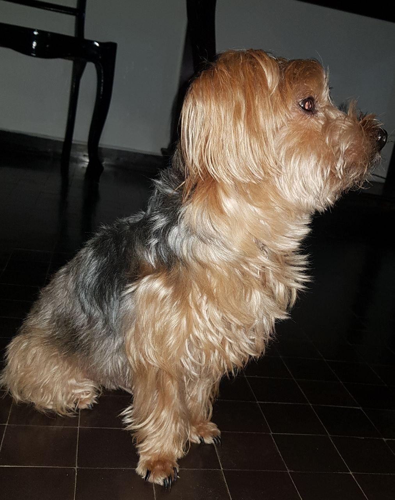

Quem sou
Meu nome é Filipe Martins Pontes Gonçalo e sou estudante de Ciência da Computação na Universidade Federal de Pernambuco.
Sobre mim
No meu tempo livre, gosto de ler e andar de bicicleta.  Tenho um cachorro chamado Snoopy e uma calopsita. Gosto de futebol e Formula 1, sou torcedor do Sport e do Sebastian Vettel.